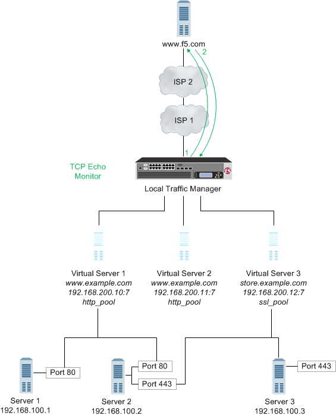
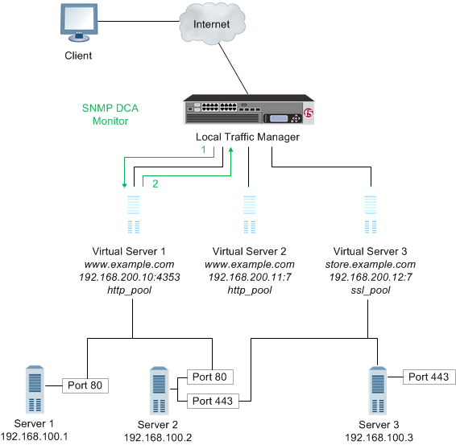
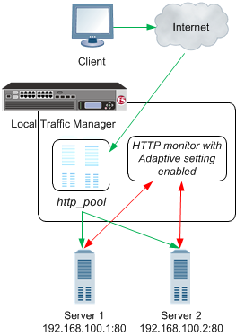

Updated Date: 07/07/2026
Monitors Concepts
Monitors determine the availability and performance of devices, links, and services on a network. Health monitors check the availability. Performance monitors check the performance and load. If a monitored device, link, or service does not respond within a specified timeout period, or the status indicates that performance is degraded or that the load is excessive, the BIG-IP system can redirect the traffic to another resource.
Monitors gather information about your network. The information that monitors gather is available for you to view. You can use this information to troubleshoot problems and determine what resources in your network are in need of maintenance or reconfiguration.
FTP, SMTP, POP3, and IMAP monitors provide inherent iCheck functionality, which reduces the load on BIG-IP systems and improves sustained monitor performance. Additionally, iCheck functionality provides smoother performance characteristics as these monitors approach full capacity.
The BIG-IP Local Traffic Manager™, DNS, and Link Controller™ provide three methods of monitoring: simple monitoring, active monitoring, and passive monitoring.
Simple monitoring determines whether the status of a resource is up or down. Simple monitors do not monitor pool members (and therefore, individual protocols, services, or applications on a node), but only the node itself. The system contains three simple monitors, Gateway ICMP, ICMP, and TCP_ECHO.
Simple monitors work well when you only need to determine the up or down status of the following:
- A Local Traffic Manager node
- A BIG-IP-DNS or Link Controller server, virtual server, pool, pool member, or link
Active monitoring checks the status of a pool member or node on an ongoing basis as specified. If a pool member or node does not respond within a specified timeout period, or the status of a node indicates that performance is degraded, the BIG-IP system can redirect the traffic to another pool member or node. There are many active monitors. Each active monitor checks the status of a particular protocol, service, or application. For example, one active monitor is HTTP. An HTTP monitor allows you to monitor the availability of the HTTP service on a pool, pool member, or node. A WMI monitor allows you to monitor the performance of a node that is running the Windows Management Instrumentation (WMI) software. Active monitors fall into two categories: Extended Content Verification (ECV) monitors for content checks, and Extended Application Verification (EAV) monitors for service checks, path checks, and application checks.
An active monitor can check for specific responses, and run with or without client traffic.
Note: An active monitor also creates additional network traffic beyond the client request and server response and can be slow to mark a pool member as down.
Passive monitoring occurs as part of a client request. This kind of monitoring checks the health of a pool member based on a specified number of connection attempts or data request attempts that occur within a specified time period. If, after the specified number of attempts within the defined interval, the system cannot connect to the server or receive a response, or if the system receives a bad response, the system marks the pool member as down. There is only one passive monitor, called an Inband monitor.
A passive monitor creates no additional network traffic beyond the client request and server response. It can mark a pool member as down quickly, as long as there is some amount of network traffic.
Note: A passive monitor cannot check for specific responses and can potentially be slow to mark a pool member as up.
In the short description, briefly describe the purpose and intent of the information contained in this topic. This element is an F5 requirement.
In the short description, briefly describe the purpose and intent of the information contained in this topic. This element is an F5 requirement.
|
Monitoring Method |
Benefits |
Constraints |
|---|---|---|
|
Simple |
|
|
|
Active |
|
|
|
Passive |
|
|
| Monitor Type | Settings |
|---|---|
| TCP | Transparent and Reverse |
| HTTP | Transparent and Reverse |
| HTTPS | Transparent and Reverse |
| TCP Echo | Transparent |
| TCP Half Open | Transparent |
| ICMP | Transparent |
By default, when a monitor detects that a resource (that is, a node or a pool member) is unavailable, the BIG-IP system marks the resource as down and routes traffic to the next appropriate resource as dictated by the active load balancing method. When the monitor next determines that the resource is available again, the BIG-IP system marks the resource as up and immediately considers the resource to be available for load balancing connection requests. While this process is appropriate for most resources, there are situations where you want to manually designate a resource as available, rather than allow the BIG-IP system to do that automatically. You can manually designate a resource as available by configuring the Manual Resume setting of the monitor.
For example, consider a monitor that you assigned to a resource to track the availability of an HTML file, index.html, for a web site. During the course of a business day, you decide that you need to restart the system that hosts the web site. The monitor detects the restart action and informs the BIG-IP system that the resource is now unavailable. When the system restarts, the monitor detects that the index.html file is available, and begins sending connection requests to the web site. However, the rest of the web site might not be ready to receive connection requests. Consequently, the BIG-IP system sends connection requests to the web site before the site can respond effectively.
To prevent this problem, you can configure the Manual Resume setting of the monitor. When you set the Manual Resume setting to Yes, you ensure that the BIG-IP system considers the resource to be unavailable until you manually enable that resource.
If you have a resource (such as a pool member or node) that a monitor marked as down, and the resource has subsequently become available again, you must manually re-enable that resource if the monitor’s Manual Resume setting is set to Yes. Manually re-enabling the resource allows the BIG-IP system to resume sending connections to that resource.
The procedure for manually re-enabling a resource varies depending on whether the resource is a pool, a pool member, or a node.
By default, the BIG-IP system marks a pool member or node as up immediately upon receipt of the first correct response to a ping command.
The Time Until Up feature provides a way to adjust the default behavior. This feature allows the system to delay the marking of a pool member or node as up for some number of seconds after receipt of the first correct response. The purpose of this feature is to ensure that the monitor marks the pool member or node as up only after the pool member or node has consistently responded correctly to the BIG-IP system during the defined time period. With this feature, you ensure that a pool member or node that is available only momentarily, after sending one correct response, is not marked as up.
A Time Until Up value of 0 causes the default behavior. When the Time Until Up value is a non-0 value, the BIG-IP system marks a pool member or node as up only when all pool member or node responses during the Time Until Up period are correct.
BIG-IP systems use two categories of monitors: health monitors and performance monitors. You can associate monitors with the following resources:
- In Local Traffic Manager: nodes, pools, and pool members
- In DNS: links, servers, virtual servers, pools, and pool members
- In Link Controller: links, pools, and pool members
| Category | Description |
|---|---|
| Health | Checks resources to determine if they are up and functioning for a given service. |
| Performance | Gathers information about resources that the system uses to dynamically load balance traffic. |
When a virtual server that is being monitored by a health monitor does not respond to a probe from the BIG-IP system within a specified timeout period, the system marks the virtual server down and no longer load balances traffic to that virtual server. When the health monitor determines that the virtual server is once again responsive, the system again begins to load balance traffic to that virtual server. To illustrate, a Gateway Internet Control Message Protocol (ICMP) monitor pings a virtual server. If the monitor does not receive a response from the virtual server, the BIG-IP system marks that virtual server down. When the ping is successful, the system marks the virtual server up.
When a server that is being monitored by a performance monitor displays a degradation in performance, the BIG-IP system redirects traffic to other resources until the performance of the server returns to normal. To illustrate, an SNMP DCA monitor checks the current CPU, memory, and disk usage of a server that is running an SNMP data collection agent, and then dynamically load balances traffic based on the performance of the server.
An address check monitor provides a simple verification of an address on a network. This type of monitor sends a request to a virtual server. When a response is received, the test is successful.
When an address check monitor is associated with a node, it determines the availability of all services associated with that node’s IP address. If the monitor is unsuccessful in determining that a node is available, the monitor marks the node and all pool members at that IP address as Offline.
The following illustration depicts a Local Traffic Manager using a TCP Echo monitor to verify an IP address for a virtual server.
- Local Traffic Manager sends a TCP echo request to a virtual server.
- A TCP echo response is received.
An application check monitor interacts with servers by sending multiple commands and processing multiple responses.
An FTP monitor, for example, connects to a server, logs in by using a user ID and password, navigates to a specific directory, and then downloads a specific file to the /var/tmp directory. If the file is retrieved, the check is successful.
- Local Traffic Manager opens a TCP connection to an IP address and port, and logs in to the server.
- A specified directory is located and a specific file is requested.
- The server sends the file to Local Traffic Manager.
- Local Traffic Manager receives the file and closes the TCP connection.
A content check monitor determines whether a service is available and whether the server is serving the appropriate content. This type of monitor opens a connection to an IP address and port, and then issues a command to the server. The response is compared to the monitor’s receive rule. When a portion of the server’s response matches the receive rule, the test is successful.
- Local Traffic Manager opens a TCP connection to an IP address and port, and issues a command to the server.
- The server sends a response.
- Local Traffic Manager compares the response to the monitor’s receive rule and closes the connection
A path check monitor determines whether traffic can flow through a device to an endpoint. A path check monitor is successful when network paths through firewalls or routers are available.
The following illustration depicts Local Traffic Manager (LTM) using a TCP Echo monitor to verify a path to a virtual server.

- With the TCP Echo monitor Transparent option set to Yes, Local Traffic Manager sends a TCP Echo request to a virtual server.
- A TCP Echo response is received.
A performance check monitor interacts with servers to determine the server load, and to acquire information about the condition of virtual servers.
An SNMP DCA monitor, for example, checks the current CPU, memory, and disk usage of a pool, pool member, or node that is running an SNMP data collection agent, and then dynamically load balances traffic accordingly.
Note: If you configure a performance monitor, such as the SNMP DCA or WMI monitor type, you should also configure a health monitor. Configuring a health monitor ensures that Local Traffic Manager reports accurate node availability status.

- Local Traffic Manager connects with a server to acquire data.
- The server sends the data to Local Traffic Manager for evaluation and determination of load balancing.
A service check monitor determines whether a service is available. This type of monitor opens a connection to an IP address and port, and then closes the connection. When the TCP connection is established, the test is successful.
When a service check monitor is associated with pool members, it determines the availability of a service. If the monitor is unsuccessful in determining that a pool member is available, the monitor marks the pool member as Offline and no requests are sent to that pool member.
- Local Traffic Manager opens a TCP connection to an IP address and port.
- The TCP connection is closed.
Network resources often perform different functions at the same time. Therefore, it is likely that multiple monitors are checking the availability of a single resource in different ways.
A BIG-IP system may monitor a single resource to verify that the connection to the resource is available, that a specific HTML page on the resource can be reached, and that a database query returns an expected result.
The Virtual Location monitor optimizes the way that the BIG-IP system manages connections to pool members by assigning priority groups to local and remote pool members.
The monitor determines whether a pool member is local (residing in the same data center as the BIG-IP system) or remote (residing in a different data center). If a pool member is local, the monitor sets the priority group of the pool member to a higher priority. If a pool member is remote, the monitor sets the priority group of the pool member to a lower priority.
Important: You must configure Priority Group Activation to specify the minimum number of available members, before the BIG-IP system begins directing traffic to members in a lower priority group.
Adaptive response time monitoring measures the amount of time between when the BIG-IP system sends a probe to a resource and when the system receives a response from the resource. It adds an extra dimension to existing monitoring capabilities. A monitor with adaptive response time enabled marks a service as up or down based on the deviation of latency of the monitor probe from the mean latency of a monitor probe for that service. In typical cases, if the monitor detects three consecutive probes that miss the latency value you set, the system marks the pool member or node as down.
There are two types of adaptive response time monitoring:
- Absolute
- The number of milliseconds that the latency of a monitor probe can exceed the mean latency of a monitor probe, for the service being probed.
- Relative
- The percentage of deviation that the latency of a monitor probe can exceed the mean latency of a monitor probe, for the service being probed; that is, the running mean latency calculated by the system.
You can enable the adaptive response time monitoring feature on these specific monitors:
- DNS
- Gateway ICMP
- HTTP
- HTTPS
- ICMP
- TCP
- UDP
A monitor marks a service down if a response to a probe does not meet the latency requirements of either the absolute limit or the relative limit, that is the running average. By default, the system stores the last five minutes of probe history for each monitor instance in a buffer. The system uses this history to calculate the varying mean latency of the probes for that monitor instance.
This example shows a BIG-IP Local Traffic Manager™system configured to handle HTTP traffic using a pool and an HTTP monitor with adaptive response time monitoring enabled (through the Adaptive setting).

- A client makes an HTTP request. The HTTP request is represented by the green arrows.
- The request is routed to an HTTP pool on BIG-IP Local Traffic Manager (LTM).
- The LTM routes the request to one of two servers in the pool.
- The HTTP monitor assigned to the pool determines whether the servers are up or down based on the probe latency of each server. The probe is represented by the red arrows.
One example of how you can use adaptive response time monitoring is to optimize a moderately configurable web application that is served by several web servers with limited memory capacity. For example, when the web application is overwhelmed with traffic, perhaps at month end, the application may consume excessive amounts of memory and start swapping to disk, substantially degrading performance. Because performance degrades drastically when this condition poccurs, and you do not want the BIG-IP Local Traffic Manager™ to mark a server down unnecessarily, you can configure the servers in a pool with an HTTP monitor by enabling the Adaptive setting.
You can use adaptive response time monitoring to mitigate probe attacks. For example, consider the scenario where a popular web application for a financial company receives a a huge number of brute-force logon attempts that cause the web servers to become unresponsive. As the administrator, you can place the web servers in a pool configured for priority-based load balancing and assign an HTTP monitor with the Adaptive setting Enabled. When probe latency spikes, the monitor marks the primary servers in the pool down. When all the primary servers are marked down, the system sends requests to a secondary set of servers in the pool that presents a page that does not accept logon attempts.
You implement monitors by using either the BIG-IP Configuration utility or a command line utility. The task of implementing a monitor varies depending on whether you are using a preconfigured monitor or creating a custom monitor. A preconfigured monitor is an existing monitor that BIG-IP system provides for you, with its settings already configured. A custom monitor is a monitor that you create based on one of the allowed monitor types.
If you want to implement a preconfigured monitor, you need only associate the monitor with a pool, pool member, or node, and then configure the virtual server to reference the relevant pool. If you want to implement a custom monitor, you must first create the custom monitor. Then you can associate the custom monitor with a pool, pool member, or node, and configure the virtual server to reference the pool.
For a subset of monitor types, the BIG-IP system includes a set of preconfigured monitors. You cannot modify preconfigured monitor settings, as they are intended to be used as is. The purpose of a preconfigured monitor is to eliminate the need for you to explicitly create a monitor. You use a preconfigured monitor when the values of the settings meet your needs as is.
Preconfigured monitors include the following entries.
gateway_icmphttphttp_head_f5httpshttps_443https_head_f5icmpinbandreal_serversnmp_dca
An example of a preconfigured monitor is the http monitor. The example shows the http monitor, with values configured for its Interval, Timeout, and Alias Address settings. Note that the Interval value is 5, the Timeout value is 16, the Transparent value is No, and the Alias Address value is * All Addresses.
If the Interval, Timeout, Transparent, and Alias Address values meet your needs, you simply assign the http preconfigured monitor directly to a server, virtual server, pool, pool member, or link. In this case, you do not need to use the Monitors screens, unless you simply want to view the values of the preconfigured monitor settings.
Name http
Type HTTP
Interval 5
Timeout 16
Transparent No
Alias Address * All AddressesImportant: All preconfigured monitors reside in partition Common.
You create a custom monitor when the values defined in a preconfigured monitor do not meet your needs, or no preconfigured monitor exists for the type of monitor you are creating.
When you create a custom monitor, you use the BIG-IP Configuration utility or a command line utility to: give the monitor a unique name, specify a monitor type, and, if a monitor of that type already exists, import settings and their values from the existing monitor. You can then change the values of any imported settings.
You must base each custom monitor on a monitor type. When you create a monitor, the BIG-IP Configuration utility displays a list of monitor types. To specify a monitor type, simply choose the one that corresponds to the service you want to check. For example, if you want to want to create a monitor that checks the health of the HTTP service on a pool, you choose HTTP as the monitor type.
If you want to check more than one service on a pool or pool member (for example HTTP and HTTPS), you can associate more than one monitor on that pool or pool member.
Checking services is not the only reason for implementing a monitor. If you want to verify only that the destination IP address is alive, or that the path to it through a transparent node is alive, use one of the simple monitors, icmp or tcp_echo. Or, if you want to verify TCP only, use the monitor tcp.
If a preconfigured monitor exists that corresponds to the type of custom monitor you are creating, you can import the settings and values of that preconfigured monitor into the custom monitor. You are then free to change those setting values to suit your needs. For example, if you create a custom monitor called my_icmp, the monitor can inherit the settings and values of the preconfigured monitor icmp. This ability to import existing setting values is useful when you want to retain some setting values for your new monitor but modify others.
The example shows a custom ICMP-type monitor called my_icmp, which is based on the preconfigured monitor icmp. Note that the Interval value is changed to 10, and the Timeout value is 20. The other settings retain the values defined in the preconfigured monitor.
Name my_icmp
Type ICMP
Interval 10
Timeout 20
Transparent No
Alias Address * All Addresses
You can import settings from another custom monitor instead of from a preconfigured monitor. This is useful when you would rather use the setting values defined in another custom monitor, or when no preconfigured monitor exists for the type of monitor you are creating. For example, if you create a custom monitor called my_oracle_server2, you can import settings from another custom Oracle-type monitor that you created, such as my_oracle_server1. Selecting a monitor is straightforward. Like gateway_icmp, each of the monitors has a Type setting based on the type of service it checks, for example, http, https, ftp, pop3, and a Parent Monitor that is used for importing the custom monitor settings. (Exceptions are port-specific monitors, like the external monitor, which calls a user-supplied program.)
You can configure Dynamic Ratio load balancing for pools that consist of RealNetworks® RealServer™ servers, Microsoft Windows servers equipped with Windows Management Instrumentation (WMI), or any server equipped with an SNMP agent such as the UC Davis SNMP agent or Windows 2000 Server SNMP agent.
To implement Dynamic Ratio load balancing for these types of servers, BIG-IP system provides a special monitor plug-in file and a performance monitor for each type of server. The exception is a server equipped with an SNMP agent. In this case, the BIG-IP system provides the monitor only; no special plug-in file is required for a server running an SNMP agent.
You must install the monitor plug-in on each server to be monitored, and you must create a performance monitor that resides on the BIG-IP system. Once you have created a monitor, the monitor communicates directly with the server plug-in.
For each server type, this table shows the required monitor plug-in and the corresponding performance monitor types.
For each server type, this table shows the required monitor plug-in and the corresponding performance monitor types.
| Server Type | Monitor plug-in | Monitor Type |
|---|---|---|
| RealServer Windows server | F5RealMon.dll |
Real Server |
| RealServer UNIX server | f5realmon.so |
Real Server |
| Windows server with WMI | f5isapi.dll or F5Isapi64.dll or F5.IsHandler.dll |
WMI |
| Windows 2000 Server server | SNMP agent | SNMP DCA and SNMP DCA Base |
| UNIX server | UC Davis SNMP agent | SNMP DCA and SNMP DCA Base |
You must associate a monitor with the server or servers to be monitored. The server or servers can be either a pool, a pool member, or a node, depending on the monitor type. You can associate a monitor with a server in any of these ways:
- Monitor-to-pool association
- This type of association associates a monitor with an entire load balancing pool. In this case, the monitor checks all members of the pool. For example, you can create an instance of the monitor
httpfor every member of the poolmy_pool, thus ensuring that all members of that pool are checked. - Monitor-to-pool member association
- This type of association associates a monitor with an individual pool member, that is, an IP address and service. In this case, the monitor checks only that pool member and not any other members of the pool. For example, you can create an instance of the monitor
httpfor pool member10.10.10.10:80ofmy_pool.Important: A monitor associated with an individual pool member supersedes a monitor associated with that pool member’s parent pool.
- Monitor-to-node association
- This type of association associates a monitor with a specific node. In this case, the monitor checks only the node itself, and not any services running on that node. For example, you can create an instance of the monitor
icmpfor node10.10.10.10. In this case, the monitor checks the specific node only, and not any services running on that node. You can designate a monitor as the default monitor that you want the BIG-IP system to associate with one or more nodes. In this case, any node to which you have not specifically assigned a monitor inherits the default monitor.
Some monitor types are designed for association with nodes only, and not pools or pool members. Other monitor types are intended for association with pools and pool members only, and not nodes. Finally, in some instances, some monitor types associated with a node are not mutually exclusive of pools or pool members, and must function in combination in some scenarios.
Node-only monitors specify a destination address in the format of an IP address with no service port (for example, 10.10.10.2). Conversely, monitors that you can associate with nodes, pools, and pool members specify a destination address in the format of an IP address and service port (for example, 10.10.10.2:80). Therefore, when you use the BIG-IP Configuration utility to associate a monitor with a pool, pool member, or node, the utility displays only those pre-configured monitors that are designed for association with that server.
For example, you cannot associate the monitor icmp with a pool or its members, since the icmp monitor is designed to check the status of a node itself and not any service running on that node.
When you associate a monitor with a server, the BIG-IP system automatically creates an instance of that monitor for that server. A monitor association thus creates an instance of a monitor for each server that you specify. This means that you can have multiple instances of the same monitor running on your servers.
Because instances of monitors are not partitioned objects, a user can enable or disable an instance of a monitor without having permission to manage the associated pool or pool member.
For example, a user with the Manager role, who can access partition AppA only, can enable or disable monitor instances for a pool that resides in partition Common. However, that user cannot perform operations on the pool or pool members that are associated with the monitor. Although this is correct functionality, the user might not expect this behavior. You can prevent this unexpected behavior by ensuring that all pools and pool members associated with monitor instances reside in the same partition.